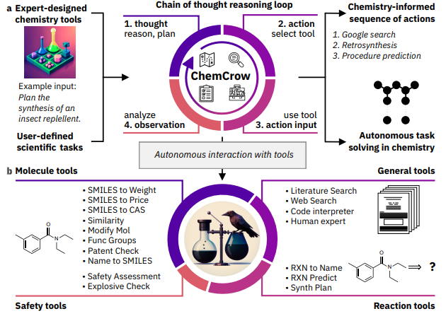

過去の注目論文：その他
論文紹介TOP < 物性物理 | 材料科学 | その他
その他：気になった論文一覧（随時更新中）
ピックアップ論文
1. 室温常圧で超伝導を示す銅ドープ鉛アパタイト構造の合成と機構
・固相法を用いて、鉛アパタイト(Pb10(PO4)6O)に銅を部分的に置換したLK-99®という物質を合成した。この物質は、室温常圧で電気抵抗がゼロになる超伝導体であることを示した。
・LK-99®の結晶構造は、X線回折(XRD)により修飾鉛アパタイト(MLA)構造であることが分かった。銅のドープにより、結晶格子の体積収縮が起こり、絶縁体から金属への相転移(IMT)が引き起こされた。
・LK-99®の超伝導性は、温度や磁場に依存する磁化率やI-V特性を測定することで確認した。特に、室温常圧で物質が磁石の上で部分的に浮上するメイスナー効果を観察した。
・LK-99®の超伝導機構は、1次元的なCu2+−O1/2−Cu2+チェーンにおける電荷密度波(CDW)とオンサイトクーロン反発エネルギー(Uc)によるバイポーラロン形成とトンネル効果に基づくと考えられる。これは、BR-BCS理論により説明できる。
コメント：LK-99が常温常圧超伝導じゃないのは残念だけど、盛り上がり自体は好き。次に期待。
DATE: 11 Aug 2023 (v3), 26 Jul 2023 (v1)
Superconductor Pb10−xCux(PO4)6O showing levitation at room temperature and atmospheric pressure and mechanism
Sukbae Lee et al. (1Quantum Energy Research Centre, South Korea)
arXiv:2307.12037 (cond-mat.supr-con)


随時更新中
#ChatGPTによる要約と追加コメントを記述